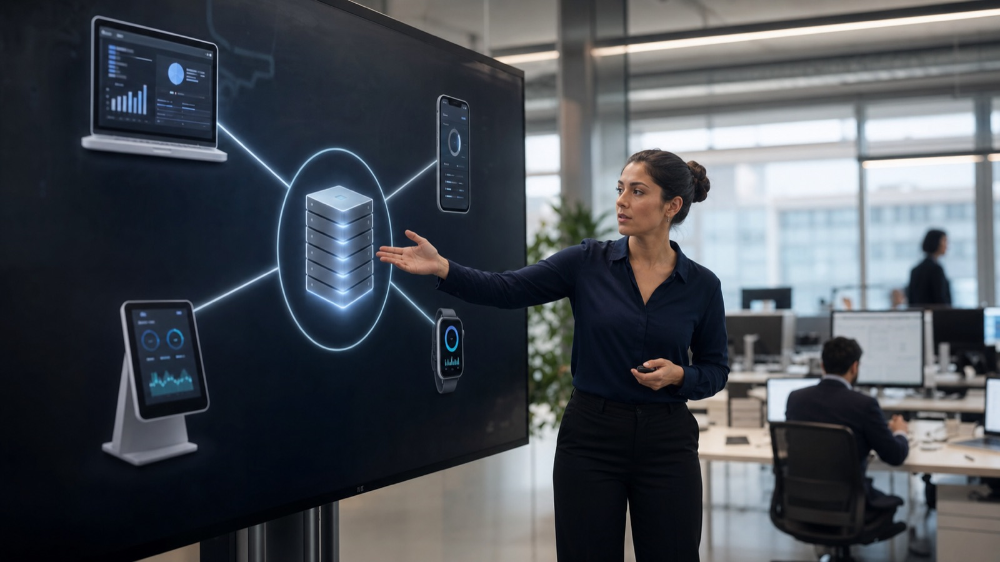

"Vendors have built their entire business model around controlling a customer through mandatory upgrades. Agentic AI is scaring the hell out of them."
— Seth Ravin, CEO, Rimini Street
A Censuswide survey of 4,295 CFOs, CISOs, CIOs, and CEOs found that 70% do not see traditional ERP as the future of enterprise software. That is not a fringe opinion from a handful of disgruntled IT directors — it is a majority position among the people who sign off on enterprise technology budgets. The alternative they are increasingly pointing to is headless ERP: an architecture that separates the system that runs your business from the interface your employees actually use. Here is what that means in practice, why well-funded startups are betting on it, and the risk that practitioners are now calling "composable regret."
What Headless ERP Actually Means
Traditional ERP systems are monolithic: the database, the business logic, and the user interface are bundled together and shipped as one product. When SAP, Oracle, or Microsoft ships an ERP module, you get their screens, their workflows, and their assumptions about how your processes should work. Headless ERP inverts this. It separates the backend, the database, business logic, and core operational functions like finance, inventory, and HR, from the "head," the user interface layer that employees, customers, and partners actually interact with.
In a headless architecture, the ERP engine exposes its functions through APIs rather than through a fixed set of screens. A custom-built web dashboard, a mobile app, a warehouse floor kiosk, a customer self-service portal, and an AI agent can all consume the same underlying APIs and present that data however best suits the use case. The backend becomes a data and logic backbone; the frontend becomes whatever you need it to be, built independently and on its own timeline.
This is closely related to the broader concept of MACH architecture, which stands for Microservices, API-first, Cloud-native, and Headless. MACH is the architectural blueprint that headless ERP vendors are building toward: a system where each component, inventory management, purchasing, production scheduling, is independently pluggable, scalable, and replaceable without a wholesale system rewrite.

The 70% Number, and Why It Matters
The Censuswide survey result deserves unpacking, because the 70% figure is not simply "ERP is bad." It splits into two distinct camps with different visions of what comes next. Among the executives who do not see traditional ERP as the future, 36% favor a composable, modular, API-driven, best-of-breed model, which is the headless ERP camp. A further 33% favor agentic ERP, systems with autonomous, AI-driven decision-making built in. These are not mutually exclusive visions; in practice, headless architecture is what makes agentic ERP technically feasible, because AI agents need clean APIs and structured data access to act autonomously across business processes. The case for autonomous AI agents in the enterprise depends heavily on exactly the kind of API-first foundation that headless ERP provides.
This sentiment is showing up in real adoption data, not just survey responses. Gartner reported that as of Q4 2024, only 39% of SAP's roughly 35,000 worldwide ECC customers had purchased or subscribed to licenses for transitioning to S/4HANA, leaving SAP approximately €2 billion short of its internal conversion targets. That gap between vendor expectation and customer migration speed is not unique to SAP; it reflects a broader hesitation among enterprise buyers to commit to another multi-year, monolithic ERP upgrade cycle when alternative architectures are gaining credibility. We covered this dynamic in detail when examining what SAP's stock decline actually signals about the pace of enterprise cloud transformation.
Why Vendors Resist This Shift
Seth Ravin, CEO of Rimini Street, frames the incentive problem bluntly: major ERP vendors have built their business models around controlling customers through mandatory upgrade cycles. A headless architecture, where the frontend can be swapped or rebuilt independently of the backend vendor's roadmap, weakens that control. This is precisely why incumbent vendors have been slower than startups to embrace true headless decoupling.
Tailor and the Headless ERP Startup Wave
The clearest signal that headless ERP has moved from theory to venture-backed reality is Tailor, a startup purpose-built for retail, e-commerce, and supply chain operators. Tailor raised a $22 million Series A in mid-2025, backed by Y Combinator, New Enterprise Associates (NEA), ANRI, and Spiral Capital, and announced an extension bringing its total Series A funding to $37 million by November 2025, adding JIC Venture Growth Investments, Global Brain, and Globis Capital Partners to its investor base.
Tailor's pitch illustrates the practical case for headless ERP clearly. The company claims implementation in days or weeks using templates and modules, compared to the months or years typically required for legacy ERP rollouts. It points to the friction of traditional systems directly, citing change orders from incumbent ERP vendors that can run as high as $30,000 for what should be a minor logic adjustment. Tailor's platform exposes a GraphQL API, low-code data modeling, event-driven webhooks, and composable app templates for functions like inventory, costing, purchasing, and production, with native connectors to Shopify, Amazon, QuickBooks, NetSuite, ShipStation, and Salesforce.
Pricing is structured around platform capability and usage rather than per-user licensing, a model that directly addresses one of the most common cost complaints about traditional ERP, where headcount growth automatically inflates software spend regardless of actual system usage.
Big Vendors Are Moving Too: Salesforce's Headless 360
Headless architecture is not confined to scrappy startups challenging incumbents. Salesforce launched Headless 360 in April 2026, and by extension demonstrated genuine market appetite for this model at scale: the platform processed 4.5 million MCP (Model Context Protocol) calls and nearly one trillion API calls in its early operation. Volume at that scale signals that enterprise customers are not just intellectually receptive to API-first architecture; they are actively building production workloads on it.
This matters for how enterprise technology leaders should read the headless ERP trend. It is not a niche architectural preference confined to retail startups, it is becoming, in the words of industry coverage, "a much broader enterprise design principle" extending well beyond its origins in headless commerce and content management systems.
The Risk Nobody Warns You About: Composable Regret
Here is the part of the headless ERP pitch that vendor marketing tends to skip. Composable, API-first architectures are not plug-and-play. They require an "API-first culture" with strong documentation, version control, and clear service ownership across every team that touches the system. They introduce orchestration overhead from managing multiple independent services that need to stay in sync. They demand dedicated security and observability layers, API security policies, centralized logging, rate limiting, because a headless system has many more integration points than a monolith, and each one is a potential failure point.
Practitioners now have a name for what happens when organizations adopt composable architecture before they have the engineering maturity to operate it: composable regret. It describes the situation where a business swaps a single vendor's monolithic complexity for a self-managed web of services, integrations, and API contracts, without first building the internal capability, dedicated platform engineers, API governance processes, incident response practices, to keep that web reliable. The result can be more operational fragility, not less, and a maintenance burden that shifts from the vendor's roadmap onto the customer's own engineering team.
The Honest Trade-Off
Headless ERP trades vendor lock-in for engineering responsibility. A monolithic ERP forces you to live with one vendor's interface and upgrade cadence, but the vendor owns reliability and integration. A headless architecture gives you the freedom to build exactly the experience you want, but your team now owns the orchestration, security, and uptime of every connection between every service. That trade is excellent for organizations with strong platform engineering capability, and genuinely risky for those without it.
Where This Fits in the Broader ERP Transformation Story
Headless ERP is not a replacement for the ECC-to-S/4HANA migration conversation that most large enterprises are already navigating, it is a parallel and increasingly competing path. Organizations currently working through SAP's migration timeline and AI readiness requirements should understand that the headless model represents a genuine alternative philosophy, not just a vendor talking point: build on a flexible API layer now, rather than betting everything on one vendor's multi-year modernization roadmap.
That said, headless ERP and traditional ERP modernization are not strictly either-or. Many large enterprises are pursuing a hybrid path, retaining SAP or Oracle as the core financial and operational system of record while building headless layers on top for specific high-friction processes, customer-facing portals, mobile field operations, AI agent workflows, where the flexibility of a custom frontend delivers more value than waiting for the core vendor's UI roadmap. The question of whether AI ultimately disrupts the ERP category entirely is closely tied to this hybrid dynamic: AI agents thrive on the kind of clean, structured API access that headless architecture provides, regardless of which vendor's data sits behind it.
What to Evaluate Before Going Headless
For organizations weighing a headless ERP path, the decision should hinge less on the architecture's theoretical appeal and more on an honest assessment of internal engineering capability. Three questions matter most: Does your organization already have, or are you willing to build, a dedicated platform engineering function responsible for API governance and service reliability? Can your team commit to documentation and version-control discipline across every service you compose together? And do you have observability and incident response processes mature enough to diagnose a failure when it occurs three services away from where the symptom appears?
Organizations that can answer yes to all three are well-positioned to capture the genuine benefits headless ERP offers: faster iteration, freedom from vendor upgrade cycles, and a foundation that is naturally suited to the agentic AI capabilities that 33% of surveyed executives are already prioritizing. Organizations that cannot should be honest about that gap before committing, because composable regret is a real and well-documented failure mode, not a hypothetical risk.
The 70% figure from the Censuswide survey is best read not as a verdict that traditional ERP is dying, but as a signal that the enterprise software market has stopped assuming monolithic, vendor-controlled architecture is the only viable model. Whether an individual organization should follow that sentiment depends entirely on whether its engineering organization is ready for the responsibility that comes with the freedom.